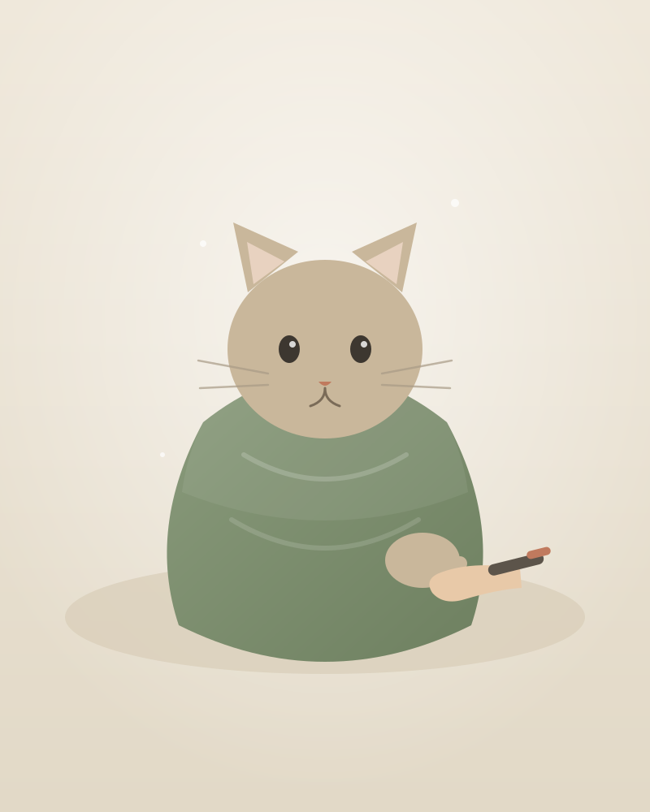
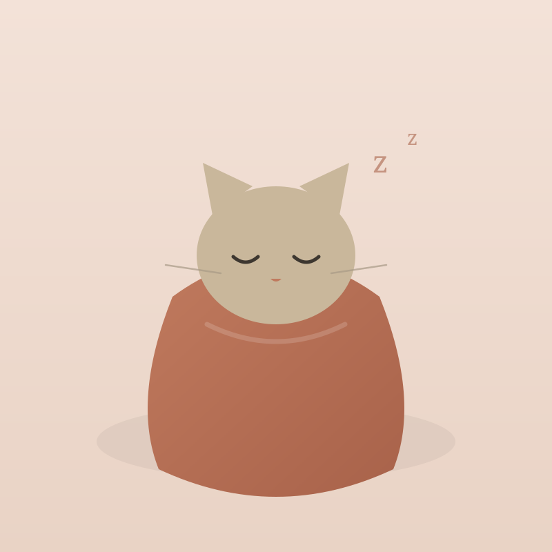
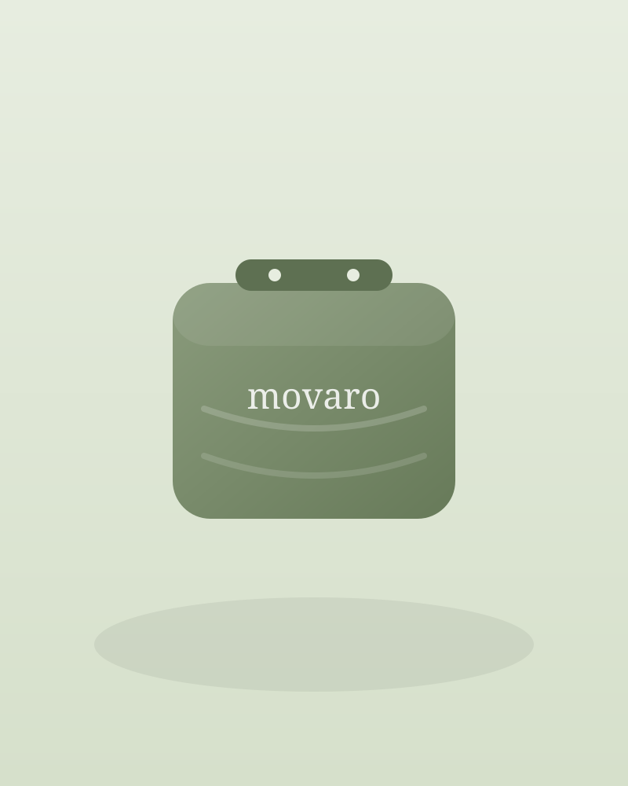

Trim Nails, Give Meds & Groom Your Cat — Without the Fight
Movaro is a vet-designed calming wrap that helps your cat feel secure while giving you safe access for nail trims, medication, brushing, ear care and vet visits.
- ✓ Vet-designed calming access
- ✓ Helps one person care for a spicy cat
- ✓ Soft, quiet fabric — no crinkly plastic
- ✓ 60-Day Calm Guarantee
- ✓ Free US shipping

to settled
Movaro cat parents
Nail trims shouldn't feel like a war.
If care time turns into a chase, a wrestle, or a two-person job, you're not a bad cat parent. The setup is just working against both of you.
Scratches & stress
You both end up tense — and sometimes you both end up bleeding.
You need a second person
One to hold, one to trim. Most routine care shouldn't require backup.
Pricey vet & groomer trips
Paying every time for a 5-minute job adds up fast.
Guilt afterward
You hate that care time feels scary for the cat you love.
From panic to peaceful care.
The same routine — without the fear, the fighting, or the second pair of hands.
Hiding, scratching, fighting
- Cat bolts the moment the clippers appear
- Wriggling, hissing, swatting
- Care gets skipped or rushed
- Everyone's stressed afterward
Wrapped, calm, secure, accessible
- Gentle, swaddle-like pressure that soothes
- Open just the paw, ear or shoulder you need
- Care done calmly in minutes
- One person, no drama
Everything you need for calmer care
Calm swaddle pressure
Gentle, even pressure helps your cat feel held and secure — never squeezed.
Paw-by-paw access
Reveal one paw at a time for stress-free nail trims — the rest stays cozy.
Mouth, ears & shoulder access
Targeted openings for meds, ear cleaning and shoulder-blade injections.
Soft, quiet fabric
Breathable, no crinkly plastic — nothing to startle a sensitive cat.
Secure, adjustable fit
Soft fasteners adjust to your cat — snug enough to soothe, never tight.
Made for real routines
Nail trims, medication, brushing, insulin shots, subcutaneous fluids & vet visits.
Your cat isn't bad. They're scared.
When a cat feels exposed and out of control, instinct takes over — they squirm, hide and lash out. It's not defiance. It's fear.
Movaro was designed to gently lower that fear. The soft, swaddle-like wrap gives your cat a sense of safety and containment, so handling feels less threatening — and routine care becomes something calmer for both of you.
- ✓ Reduces the feeling of being exposed
- ✓ Supports calmer, more predictable handling
- ✓ Helps you stay gentle and unhurried

The complete calm-care kit

Save $20 — Launch PriceMovaro Cat Calm Wrap
A vet-designed calming wrap that turns dreaded care time into a few calm minutes.
- ✓ 1 Movaro Cat Calm Wrap
- ✓ Size Finder
- ✓ Calm Start Guide
- ✓ Calming spray sample (while supplies last)
- ✓ 60-Day Calm Guarantee
- ✓ Free US Shipping
Free US shipping · 60-day money-back Calm Guarantee
Why Movaro beats the workarounds
Towels slip. Cheap bags crinkle and pinch. Vet trips cost every time. Movaro was built for calm, solo, at-home care.
| Movaro Wrap | Towel "burrito" | Cheap grooming bag | Vet / groomer visit | |
|---|---|---|---|---|
| Keeps cat calm | ✓ Designed for it | ~ Slips loose | ✕ Crinkly & tight | ~ New scary place |
| Targeted access | ✓ Paw, ear, shoulder | ✕ All or nothing | ~ Limited | ✓ |
| Secure, adjustable fit | ✓ | ✕ | ~ One-size | ✓ |
| Soft, quiet fabric | ✓ | ✓ | ✕ Plastic | ~ |
| Works solo (one person) | ✓ | ✕ Needs two | ~ | ✕ Staff needed |
| Cost over time | ✓ One-time | ✓ Free-ish | ✓ Cheap | ✕ Every visit |
| Guarantee | ✓ 60 days | ✕ | ✕ | ✕ |
Care that finally feels kind
Real reactions from early Movaro users. Individual experiences vary cat to cat.
"I finally trimmed his nails by myself."
No chasing, no second person. He stayed calm the whole time.
"The first product that made care feel less traumatic."
My senior cat needs daily meds. This made it manageable for both of us.
"Soft, quiet, and so much easier than a plastic bag."
No scary crinkle sound. She actually relaxes into it now.
Not sure which size? We'll help.
A snug, comfortable fit is what makes the calming work. Measure once and pick with confidence — five sizes from kitten to extra-large.
How Movaro works
Four calm steps. No wrestling, no rush.
Let them sniff & relax
Place the wrap nearby so your cat can investigate it on their own terms.
Secure gently & calmly
Wrap snugly and fasten. The soft pressure helps your cat settle.
Open only what you need
Reveal a single paw, an ear, or the shoulder — keep the rest cozy.
Reward, release, repeat
Finish with a treat. Short, positive sessions build trust over time.
Try it at home for 60 days.
Give Movaro a real chance during your normal routine. If it doesn't make care easier for you and your cat, contact us — we'll make it right.
Start Calmer CareYou asked, we answered
From claw-trimming battles to calm care in minutes.
Join the cat parents turning dreaded care time into a few gentle minutes. Backed by our 60-Day Calm Guarantee.
Shop Movaro Wrap — $79